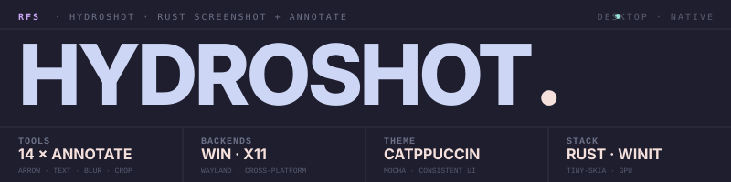

Screenshot Capture and Annotation Tool
Fast, lightweight screenshot capture built with Rust. Region selection, window capture, 14 annotation tools, clipboard/file export, pin-to-screen, Imgur upload, OCR text extraction, and Catppuccin Mocha theming.
Everything you need for screenshot workflows -- from precise region selection to professional annotations and instant sharing.
Click and drag for any area. Highlight and click any window. Timed captures with visible countdown. Multi-monitor support across all connected displays.
Arrow, rectangle, circle, line, pencil, highlight, spotlight, text, pixelate, step markers, eyedropper, measurement, rounded rectangle, and select/move.
Clipboard copy (Ctrl+C), file save (Ctrl+S), quick crop (Enter), pin to screen, Imgur upload, OCR text extraction, and recent captures history.
Lives in your system tray. Left-click to capture, global hotkey (Ctrl+Shift+S) from anywhere. Pin captures as floating always-on-top windows.
Beautiful dark theme with 5 color presets. Lucide SVG icons via resvg. Tooltips, selection size overlay, and consistent styling throughout.
Tabbed settings UI. Customizable keyboard shortcuts for all tools. Configurable toolbar visibility. TOML config with persistent preferences.
winit for windowing, tiny-skia for rendering, resvg for icons. Cross-platform capture with platform-specific backends.
Platform-specific screen capture: Windows API, X11, and Wayland backends
Overlay window management, region selection logic, and annotation toolbar
14 annotation tools with trait-based registry and command-pattern undo/redo
Config, state, renderer, export, upload, history, OCR, font loading, hotkeys
Pre-built binaries available for Windows and Linux. Or build from source with Cargo.